The Intersection of Art, Design and Data With Damola
Hi all,
I'm really pleased to be able to close out the guest blogs for 2023 with none other than Damola.
Damola brings to Tableau Public a unique style, blending both art, design and technical skill to curate what is probably one of my favourite portfolios for Tableau right now. It will come as no surprise that Damola's efforts are therefore recognised through Tableau Public's ambassador program and landing 7 viz of the days at the time of writing. I sat down with Damola to learn more about his designs.
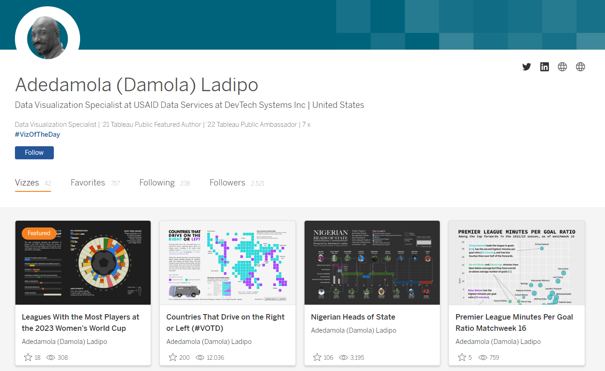
CJ: Damola, thanks for joining. For those that are unaware, May you tell us a little about how you ended up in the world of data? Does joining the community in 2020 coincide with your move to DevTech systems?D: I'm grateful for the invitation, CJ, and truly honored to be interviewed.Before my role at DevTech Systems, my professional journey led me through positions as a Monitoring and Evaluation (M&E) Specialist for NGOs in Central Asia and West Africa, and as an Assessment Officer for a Think Tank in the Middle East. Engaging in projects spanning climate change adaptation, internal and external displacement monitoring, water, sanitation, hygiene, education, and shelter, I found immense satisfaction in the multifaceted challenges. Yet, what truly captivated me was the world of data visualization. In these roles, I created charts, maps, and tables for factsheets, reports, dashboards, and presentations.While honing my skills on the job, I self-taught Tableau, Power BI, R, and Adobe InDesign, gradually building a portfolio of impactful visualizations. Around early 2020, fueled by a desire to focus my career on data visualization, I sought a role aligning with this passion within the international relations field. My portfolio and professional background ultimately led me to my current position at USAID Data Services with DevTech Systems, where I serve as a Data Visualization Specialist, primarily crafting Tableau dashboards for the agency.Indeed, you're correct in noting that my entry into the Tableau community coincided with my tenure at DevTech Systems. It was around the summer of 2020 that I discovered Tableau visualizations on Twitter, marked with #datafam and #makeovermonday. Witnessing the designs and possibilities in Tableau, I was inspired to create similar visualizations.CJ: Makeover Monday was your first introduction of visuals to your page. Did you find different data sets helped you both from an analytical point of view but also testing your design skills?D: Absolutely. Participating in #makeovermonday provided an exhilarating challenge, compelling me to assemble visualizations within tight timeframes while continuously pushing the boundaries of my skills and exploring new techniques. What made it particularly enjoyable was immersing myself in the designs of others, comparing and contrasting to identify areas of improvement in my own work. Drawing inspiration from diverse visualizations became an integral and rewarding aspect of my creative process.I embarked on #makeovermonday visualizations during the peak of the pandemic, and the community aspect played a vital role, offering a sense of connection during an isolated period and providing an expressive outlet in a medium I had grown passionate about.
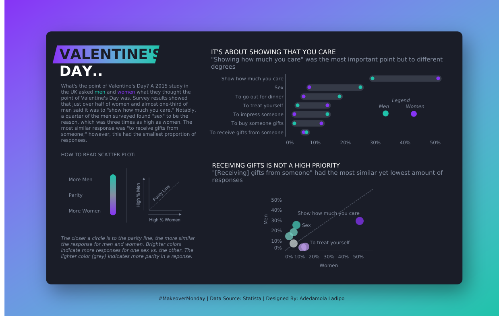
CJ: I would consider your portfolio one of the most complete and beautiful tableau pages there is. Has design always been a passion of yours? Could you talk us through your process of design? Is it analytically, chart style, or design driven to start?D: I really appreciate that, CJ. I would say the same for your portfolio.Years ago I wanted to be a graphic designer like my father, but life took me down a different path. I think a part of me still wonders what it would have been like to have been one, which is probably one of the reasons design is such a major part of my work.My process for designing business dashboards or stand-alone data visualizations at work primarily follows the often non-linear design thinking process.
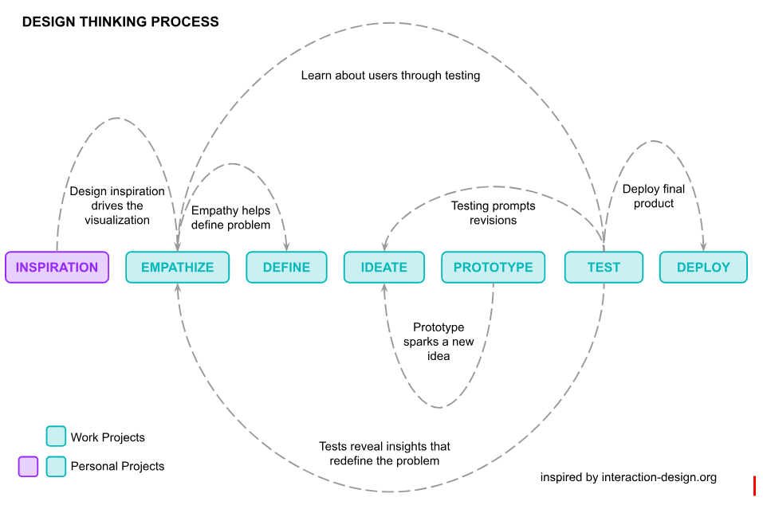
However, when delving into personal projects, inspiration for a specific chart style, layout, or design aesthetic often takes precedence. This is because I draw inspiration not only from other visualizations but also from diverse sources such as articles, advertisements, scenes from shows, movies, documentaries, art, photography, and even packaging. These elements often become the focal point before diving into the empathy for the audience and ideation stages.This is usually because I gain a lot of inspiration from not just other visualizations, but also things I come across in articles, articles, advertisements, scenes from shows, movies, documentaries, art, packaging, etc. And I make that the first priority, before the empathy for the audience and ideation stage.Several instances illustrate scenarios where the design took precedence:
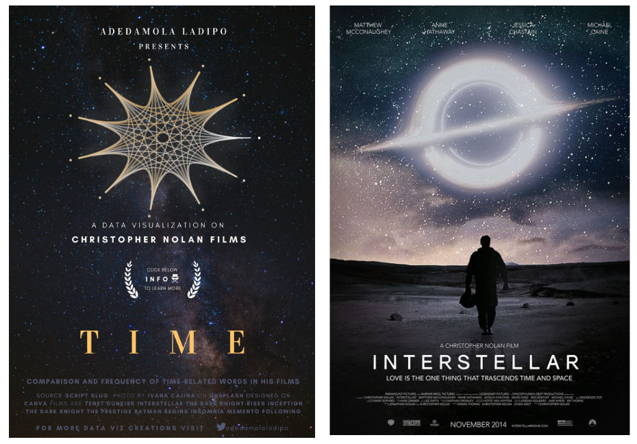
You can view the Christopher Nolan Films visual, here.A data visualization about Christopher Nolan's movies (I’m a huge fan) designed to resemble a movie poster, drawing inspiration from an Interstellar poster.
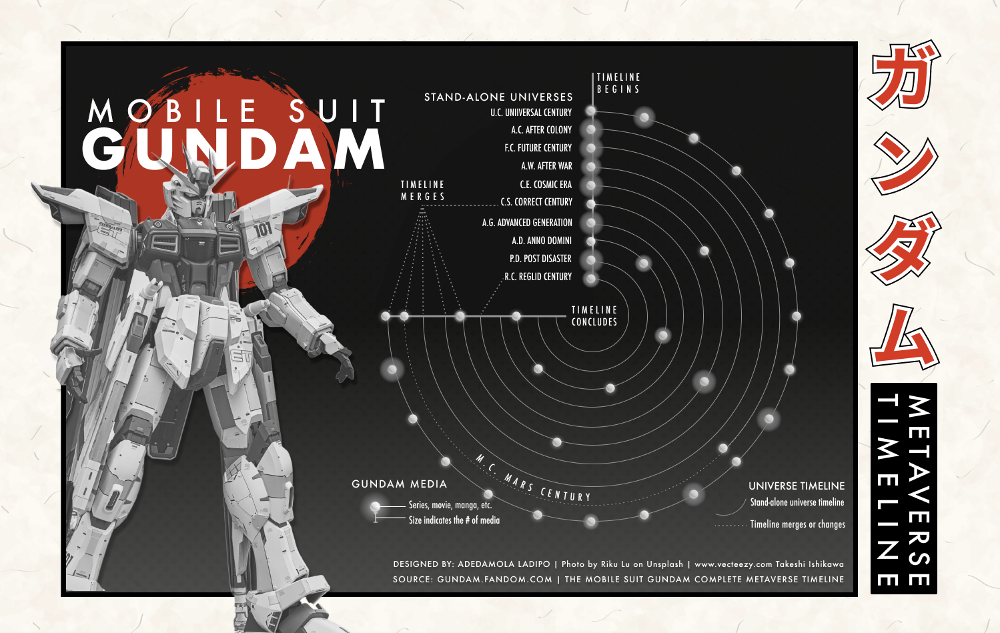
View Mobile Suite Gundam Metaverse Timeline
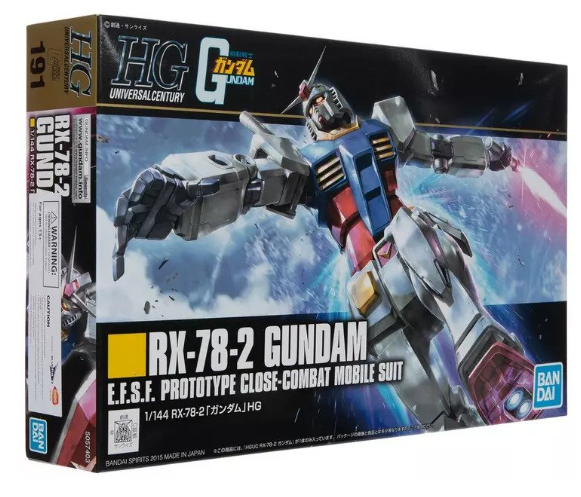
A visualization inspired by a Mobile Suite Gundam (one of my favorite animes)Gunpla (Gundam Model) box, capturing the artistic packaging.
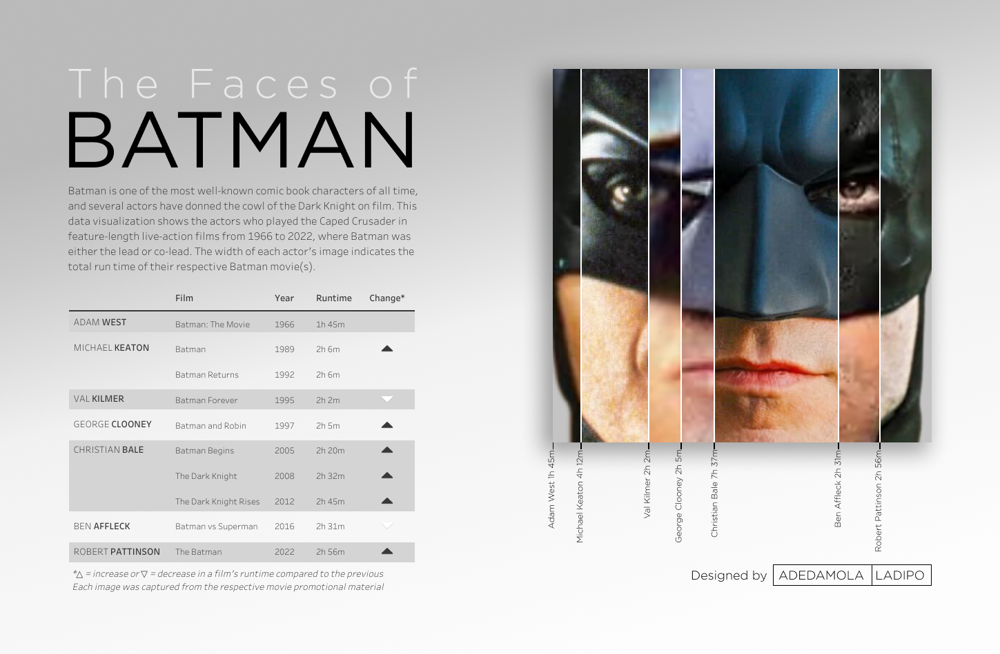
View The Faces of Batman
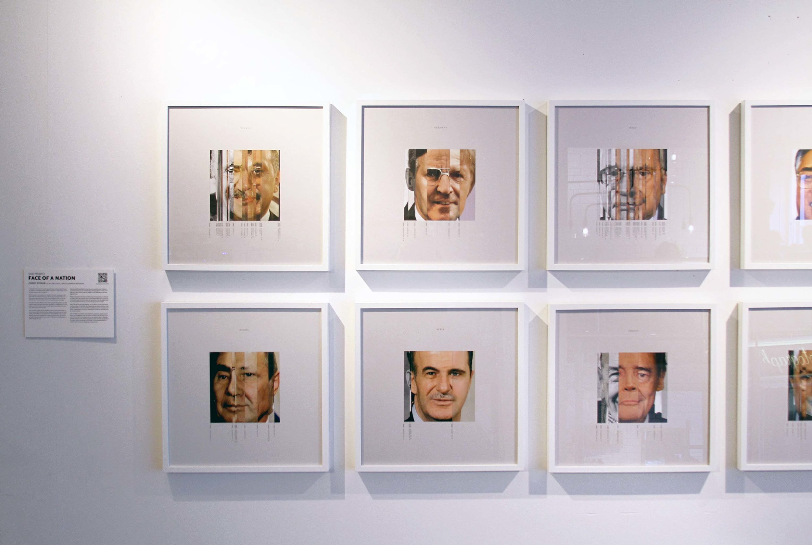
TheFace of a Nation visualization by Guney Soykansparked my desire to create a similar visual of one of the most well-known character faces in film, Batman.
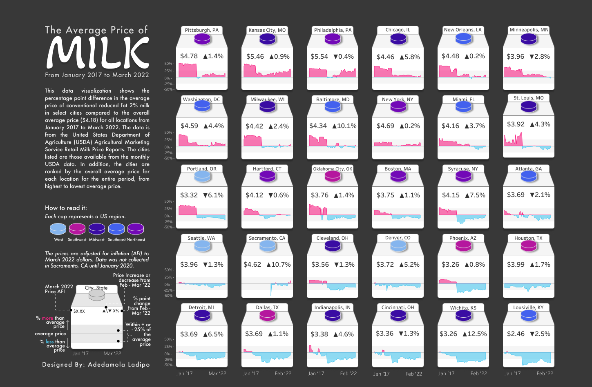
The Average Price of MilkThe inspiration for this is probably the most obvious. Inspired by the idea of using milk cartons for small multiple charts, the visualization utilizes aspects of a typical milk carton to convey data for various locations.CJ: Your profile raises awareness of some key events around racial bias, integration, and various diversity topics. I’ve noticed you steer more towards clear, more ‘standard’ chart types in these visuals - was this a storytelling choice?
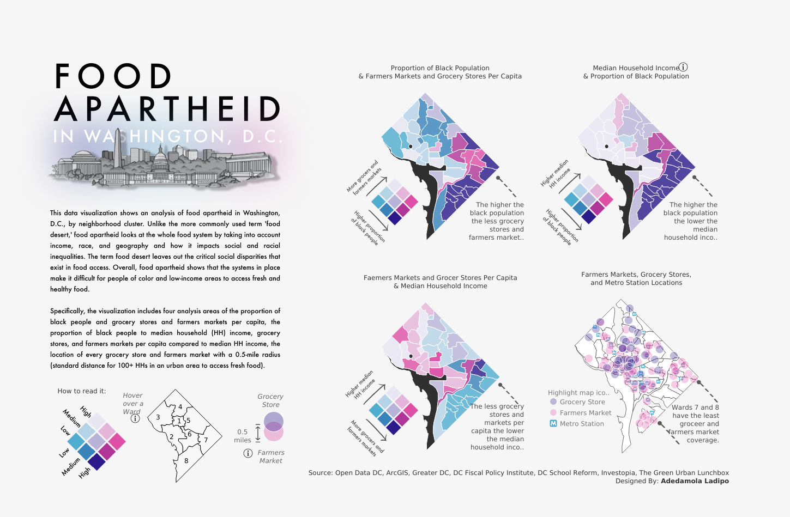
D: I'm deeply passionate about social issues, particularly those aligned with my personal interests in sports and film. However, my day job, focused on International Development operations dashboards, doesn't naturally always cover these topics. While I find the work enjoyable, personal projects offer the freedom to explore different data visualization approaches beyond creating standard business dashboard charts, maps, and KPIs.One of my early social issues data visualizations focused on "Food Apartheid in Washington, D.C.," shedding light on a prevalent yet insufficiently discussed issue in the city. The response from Tableau, the Data Visualization Society, Black In Data, the DC Department of Health, and the GitHub news blog exceeded my expectations. This experience reinforced my commitment to creating data stories on diverse social issues, aiming for general awareness and advocacy.CJ: The breadth in chart styles on show in your portfolio is incredible, is showcasing data in different ways important to you? Was there one that you found particularly challenging to create, if so what technical elements played a part in that?D: Thanks again for the compliment.Diversifying chart styles is indeed crucial to me. I thrive on the challenge of creating something novel. Reflecting on it, my visualization of "The Success and Failure of West Ham Managers" posed a few challenges. It marked one of the first instances where I incorporated custom shapes and map layers, coupled with my first ever attempt at a radial chart in Tableau.
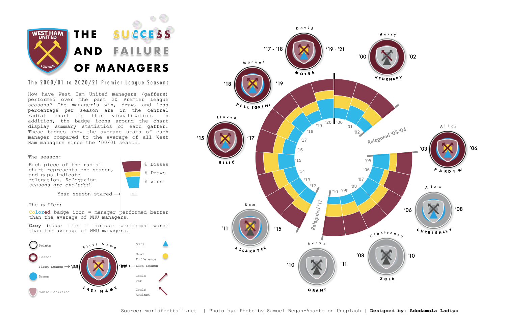
The Success and Failure of West Ham ManagersThe noteworthy technical challenge layer in deciding to display information only during West Ham's time in the Premier League. For periods of relegation, I wanted the visual to remain blank, emphasizing their time out of the Premier League. Achieving this involved utilizing calculations in Tableau and elements from Figma, such as grey lines to underscore when West Ham dropped down. I also owe you a lot of thanks for your your "Game, Shape, Match" tutorial, which was instrumental in providing significant inspiration for the custom West Ham logos I created.CJ: With much of your recent work, your workbooks consist of only one or two charts on the page. How do you approach the number of charts needed to solidify your story? Does positioning play an important role when thinking about legends and additional text context?D: My focus on a low number of charts is intentional because I like to center my visuals around one focal point and technique. I occasionally include complementary visuals to provide added context to the data story. The choice of where to place a chart is typically on a case-by-case basis, with an emphasis on visual hierarchy as the deciding factor. Hierarchy in a dashboard guides the user's attention to key elements. The average person's attention span today is 8 seconds, so I try to follow the reading pattern and rule of thirds hierarchy to create engaging content.Reading patternPositioning is a crucial factor for the reader. I design my charts with the viewer's eye in mind, ensuring a natural flow that builds an understanding of the portrayed story. Organizing visuals to follow an "F" or "Z” pattern.
As the reader follows the flow of the dashboard, the arrangement ensures a logical sequence.Rule of thirdsThe elements in my visuals typically follow the rule of thirds when it comes to placement. This rule involves two vertical and horizontal lines crossing on a page. The points where they intersect direct the reader's eyes. I usually use these points to position titles, legends, source information, context information, or certain visualizations.
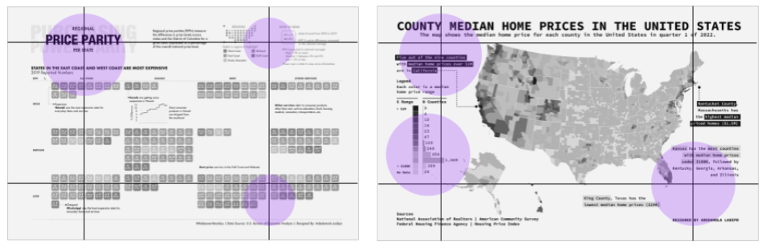
For a more in-depth explanation of design hierarchy also covering size, scale, and typography I recommend checking out What is Visual Hierarchy and Why is it importantCJ: I am a huge fan of your SportsVizSunday content, obviously! Within your All-Time fastest 200-meters visual and your NFL record visual you tend to use a color palette of just 2-3 colors. How do you approach the logic of applying color to visuals?D: Thanks again! I'm also a big fan of yours. Your soccer/football visualizations are truly impressive and in my opinion, match the standards set by Opta Analyst, and Tifo for the Athletic as well as other sports analysts.Regarding my use of color, I am a firm believer in the "less is more" philosophy, a mantra I have even displayed on a poster next to my workspace as a constant reminder.I approach color selection with a deliberate mindset, considering its application when there's a clear need for specific colors, such as those from a logo. Additionally, I assess whether certain colors can evoke specific emotions or enhance visual appeal and engagement from the audience. TheAll-Time Fastest 200 Meterscolors were inspired by the concept of speed and Nike.
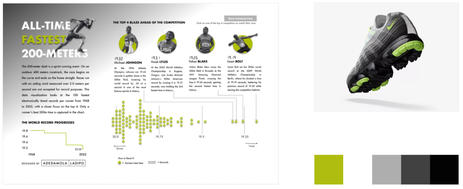
The Tuskegee Airmen colors were inspired by a captivating video of jellyfish.
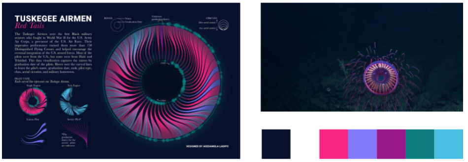
The Leagues with the Most Players in the Women’s 2023 World Cup colors derived from the logo to maintain consistency with the branding.
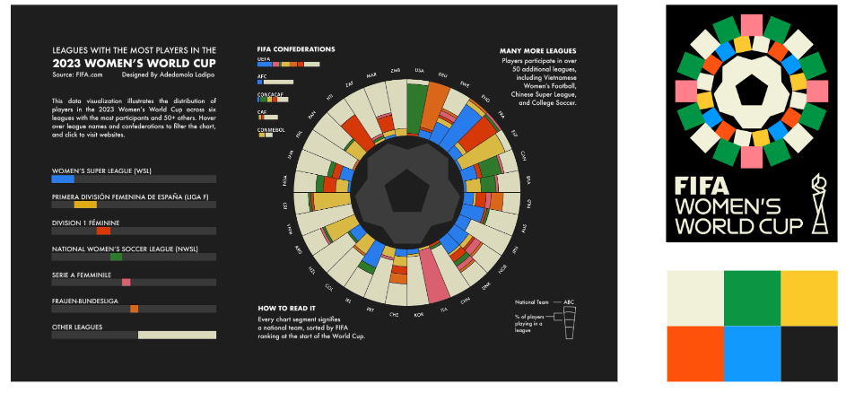
CJ: What design tools do you currently use for your public work? Is there any data or design products you’d like to add to your toolkit?D: In my public work, I leverage Figma to prototype ideas and craft backgrounds, titles, and custom shapes for my Tableau visualizations.Recently, I've delved back into learning Tableau Prep to refine my data cleaning and preparation skills. I aspire to rekindle my visualization journey with R and Python, both of which I intermittently use in my professional capacity. Learning Blender and D3 is also on my radar, though the challenge lies in carving out the time to do so.Lately, I've been exploring the tools available onLadataviz by Tristan Guillevin. Tristan offers a suite of tools facilitating the creation of technically advanced charts—network, Sankey, bump, beeswarm, Voronoi, and chord—in Tableau with remarkable simplicity. For instance, my Agricultural Land Use chart employed the Voronoi generator tool, and I look forward to incorporating additional tools from Ladataviz in future projects.CJ: Are there any community members either within data visualization or the wider design community that have inspired your gallery of work? What was it that caught your attention?D: So many people in Tableau public and the wider data visualization community inspire me. The list could go on for a long time, but I’ll to name a few (This is specific to Tableau Public):The following people inspire me on Tableau Public:
Abhinav KR - Impeccably clean and captivating designs.
Adam Green - Demonstrates high-level techniques in sports visualizations.
Agata Ketterick - Crafts clean, well-designed visuals on informative topics.
Alexander Varlamov - Utilizes advanced techniques in a remarkable manner.
Ali Tehrani - Consistently produces clean, clear, and creative designs.
Priya Padham - Maintains one of the cleanest and aesthetically appealing portfolios.
Ryan Soares - Tells data stories that captivate the audience with clear and clean visuals.
Sam Epley - Creates a massive number of technical sports visualizations.
Samuel Parsons - Presents a portfolio of awe-inspiring visualizations
Simon Beaumont- Delivers brilliant sports visuals with advanced techniques.
Tristan Guillevin- Creates spectacular visuals tools using advanced techniques
Wendy Shijia - Possesses a portfolio of stunningly creative visualizations
Will Sutton - Provokes thought with data stories and eye-catching visuals.
Zainab Ayodimeji - An amazing storyteller with an eye for design and unique visuals.
Outside of Tableau I draw inspiration from data visualizations created by;
Ali Torban
Edit Gyenge
Frederica Fragapane
Gabrielle Merite
Krisztina Szucs
Their data visualizations are beyond brilliant and many of them transcend into not just being data visualizations but also. Their work is often awe-inspiring and well worth taking a look.CJ Round-up:
Woweee what a list for individuals to refer to if they are just getting started with Tableau Public content.
I'm so pleased that I had the opportunity to sit down with Damola, I find it fascinating when you mirror the end visuals with the source inspiration, be it through color palettes, posters, or objects further a field. I hope individuals loved this guest blog as much as me, some great takeaways around reading patterns and the rule of third.
That's a wrap for guest blogs in 2023. Let me know who you think should be in the 2024 editions.
LOGGING OFF,CJ
 As the reader follows the flow of the dashboard, the arrangement ensures a logical sequence.
Rule of thirds
The elements in my visuals typically follow the rule of thirds when it comes to placement. This rule involves two vertical and horizontal lines crossing on a page. The points where they intersect direct the reader's eyes. I usually use these points to position titles, legends, source information, context information, or certain visualizations.
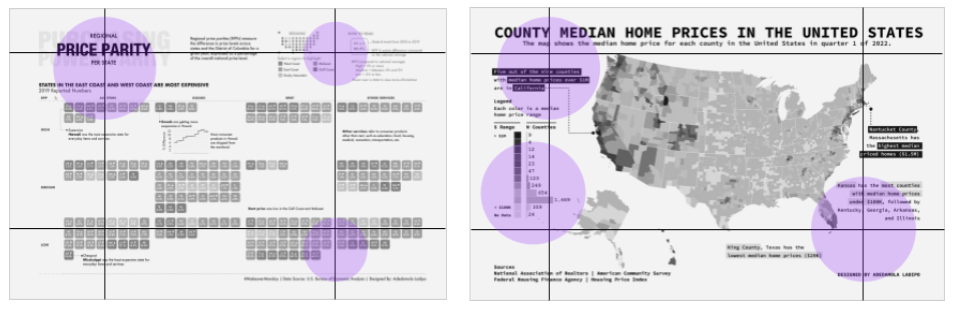
For a more in-depth explanation of design hierarchy also covering size, scale, and typography I recommend checking out What is Visual Hierarchy and Why is it important
CJ: I am a huge fan of your SportsVizSunday content, obviously! Within your All-Time fastest 200-meters visual and your NFL record visual you tend to use a color palette of just 2-3 colors. How do you approach the logic of applying color to visuals?
D: Thanks again! I'm also a big fan of yours. Your soccer/football visualizations are truly impressive and in my opinion, match the standards set by Opta Analyst, and Tifo for the Athletic as well as other sports analysts.
Regarding my use of color, I am a firm believer in the "less is more" philosophy, a mantra I have even displayed on a poster next to my workspace as a constant reminder.
I approach color selection with a deliberate mindset, considering its application when there's a clear need for specific colors, such as those from a logo. Additionally, I assess whether certain colors can evoke specific emotions or enhance visual appeal and engagement from the audience.
The All-Time Fastest 200 Meters colors were inspired by the concept of speed and Nike.
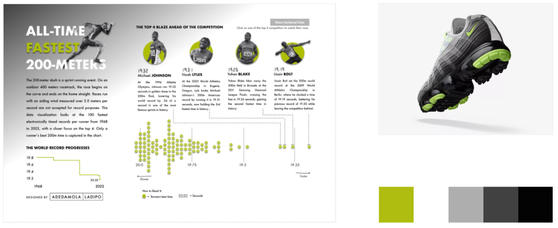
The Tuskegee Airmen colors were inspired by a captivating video of jellyfish.
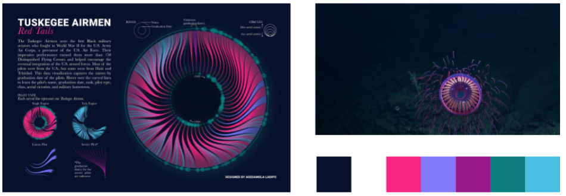
The Leagues with the Most Players in the Women’s 2023 World Cup colors derived from the logo to maintain consistency with the branding.
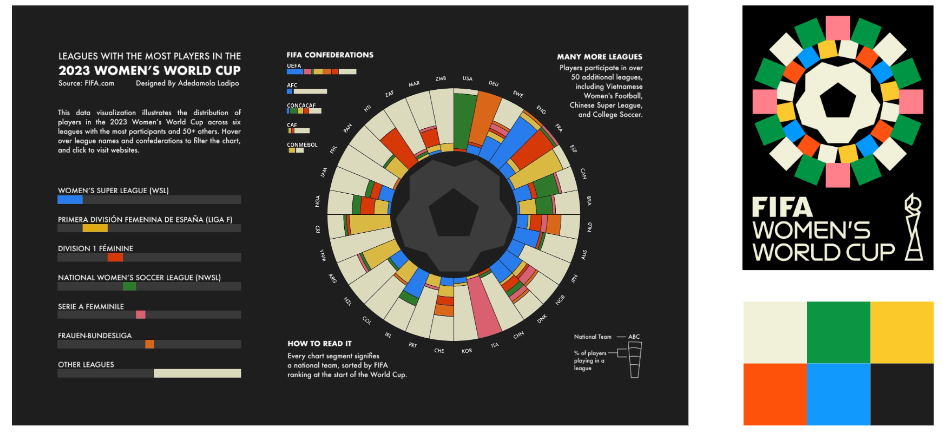
CJ: What design tools do you currently use for your public work? Is there any data or design products you’d like to add to your toolkit?
D: In my public work, I leverage Figma to prototype ideas and craft backgrounds, titles, and custom shapes for my Tableau visualizations.
Recently, I've delved back into learning Tableau Prep to refine my data cleaning and preparation skills. I aspire to rekindle my visualization journey with R and Python, both of which I intermittently use in my professional capacity. Learning Blender and D3 is also on my radar, though the challenge lies in carving out the time to do so.
Lately, I've been exploring the tools available on Ladataviz by Tristan Guillevin. Tristan offers a suite of tools facilitating the creation of technically advanced charts—network, Sankey, bump, beeswarm, Voronoi, and chord—in Tableau with remarkable simplicity. For instance, my Agricultural Land Use chart employed the Voronoi generator tool, and I look forward to incorporating additional tools from Ladataviz in future projects.
CJ: Are there any community members either within data visualization or the wider design community that have inspired your gallery of work? What was it that caught your attention?
D: So many people in Tableau public and the wider data visualization community inspire me. The list could go on for a long time, but I’ll to name a few (This is specific to Tableau Public):
The following people inspire me on Tableau Public:
As the reader follows the flow of the dashboard, the arrangement ensures a logical sequence.
Rule of thirds
The elements in my visuals typically follow the rule of thirds when it comes to placement. This rule involves two vertical and horizontal lines crossing on a page. The points where they intersect direct the reader's eyes. I usually use these points to position titles, legends, source information, context information, or certain visualizations.
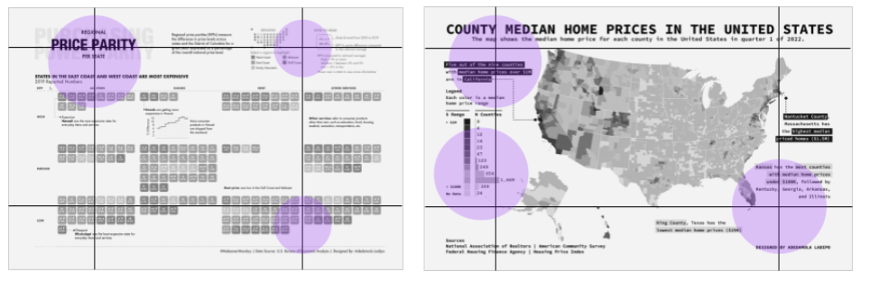
For a more in-depth explanation of design hierarchy also covering size, scale, and typography I recommend checking out What is Visual Hierarchy and Why is it important
CJ: I am a huge fan of your SportsVizSunday content, obviously! Within your All-Time fastest 200-meters visual and your NFL record visual you tend to use a color palette of just 2-3 colors. How do you approach the logic of applying color to visuals?
D: Thanks again! I'm also a big fan of yours. Your soccer/football visualizations are truly impressive and in my opinion, match the standards set by Opta Analyst, and Tifo for the Athletic as well as other sports analysts.
Regarding my use of color, I am a firm believer in the "less is more" philosophy, a mantra I have even displayed on a poster next to my workspace as a constant reminder.
I approach color selection with a deliberate mindset, considering its application when there's a clear need for specific colors, such as those from a logo. Additionally, I assess whether certain colors can evoke specific emotions or enhance visual appeal and engagement from the audience.
The All-Time Fastest 200 Meters colors were inspired by the concept of speed and Nike.
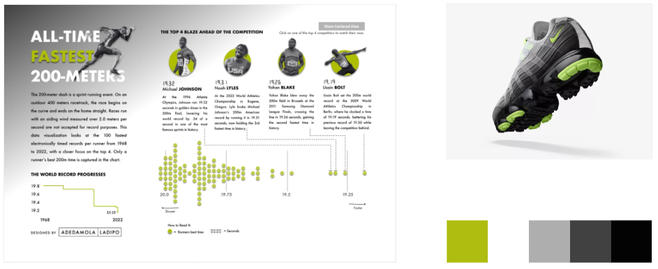
The Tuskegee Airmen colors were inspired by a captivating video of jellyfish.
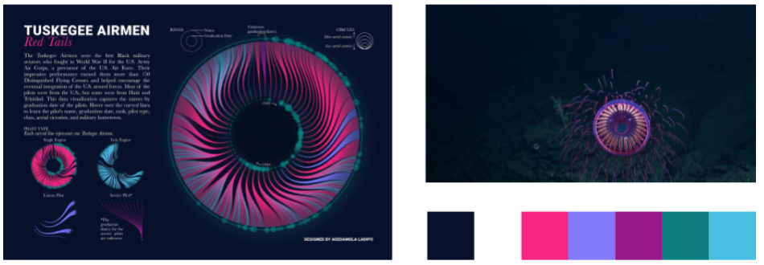
The Leagues with the Most Players in the Women’s 2023 World Cup colors derived from the logo to maintain consistency with the branding.
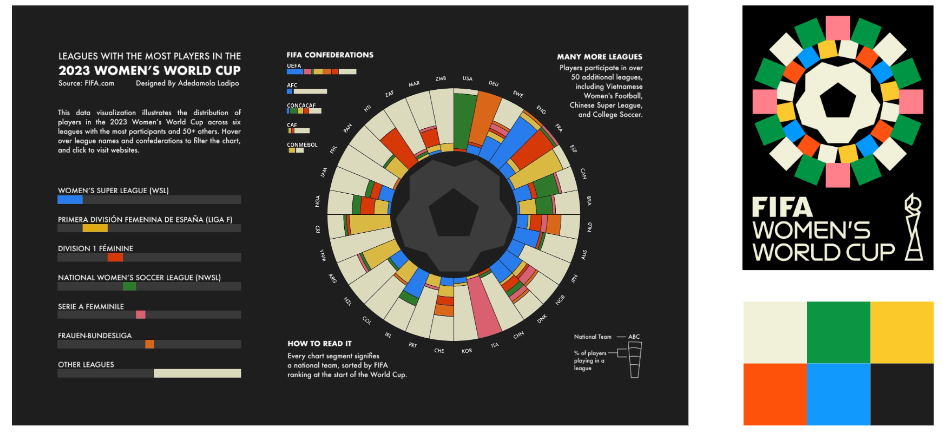
CJ: What design tools do you currently use for your public work? Is there any data or design products you’d like to add to your toolkit?
D: In my public work, I leverage Figma to prototype ideas and craft backgrounds, titles, and custom shapes for my Tableau visualizations.
Recently, I've delved back into learning Tableau Prep to refine my data cleaning and preparation skills. I aspire to rekindle my visualization journey with R and Python, both of which I intermittently use in my professional capacity. Learning Blender and D3 is also on my radar, though the challenge lies in carving out the time to do so.
Lately, I've been exploring the tools available on Ladataviz by Tristan Guillevin. Tristan offers a suite of tools facilitating the creation of technically advanced charts—network, Sankey, bump, beeswarm, Voronoi, and chord—in Tableau with remarkable simplicity. For instance, my Agricultural Land Use chart employed the Voronoi generator tool, and I look forward to incorporating additional tools from Ladataviz in future projects.
CJ: Are there any community members either within data visualization or the wider design community that have inspired your gallery of work? What was it that caught your attention?
D: So many people in Tableau public and the wider data visualization community inspire me. The list could go on for a long time, but I’ll to name a few (This is specific to Tableau Public):
The following people inspire me on Tableau Public: